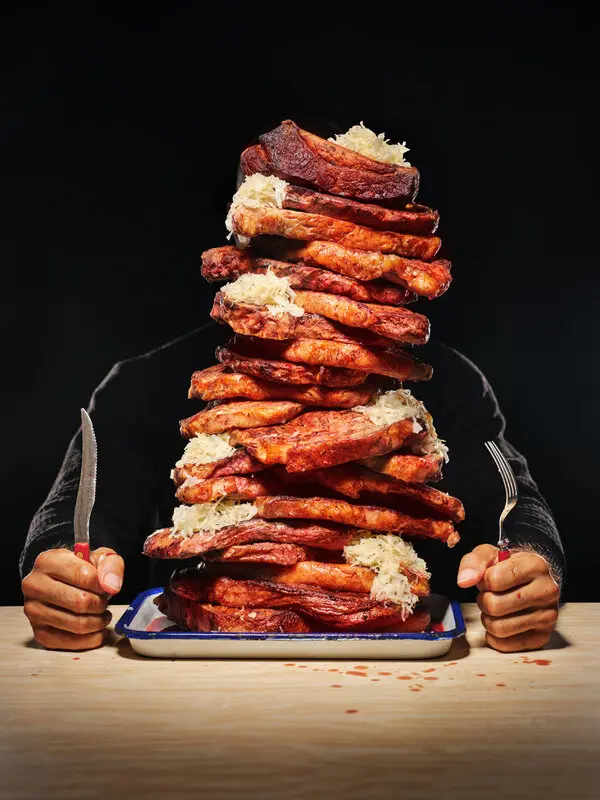

Foodies Restaurant Overview
Foodies Restaurant is a vibrant, modern dining destination designed to satisfy a wide array of culinary cravings. Specializing in hearty comfort foods like expertly crafted, juicy burgers and perfectly seared steaks, the restaurant bridges the-everyday casual dining experience with gourmet quality. Every dish is prepared with fresh ingredients, bold seasonings, and a focus on visual appeal and deep, satisfying flavors. Whether you are stopping by for a quick bite or sitting down for a relaxed evening out, Foodies provides an inviting atmosphere tailored for true food lovers.
Menu Analysis
Core Offerings:
The menu focuses heavily on high-demand, universally loved American classics—specifically custom-built burgers and steaks—ensuring strong broad-market appeal.
Pricing & Value Potential: By featuring approachable staple items, the restaurant can position itself in the accessible mid-range casual dining tier, driving high-volume daily traffic.
Customization: The emphasis on diverse toppings, cheeses, and sauces allows for scalable menu expansion without requiring a completely overhauled kitchen inventory.
